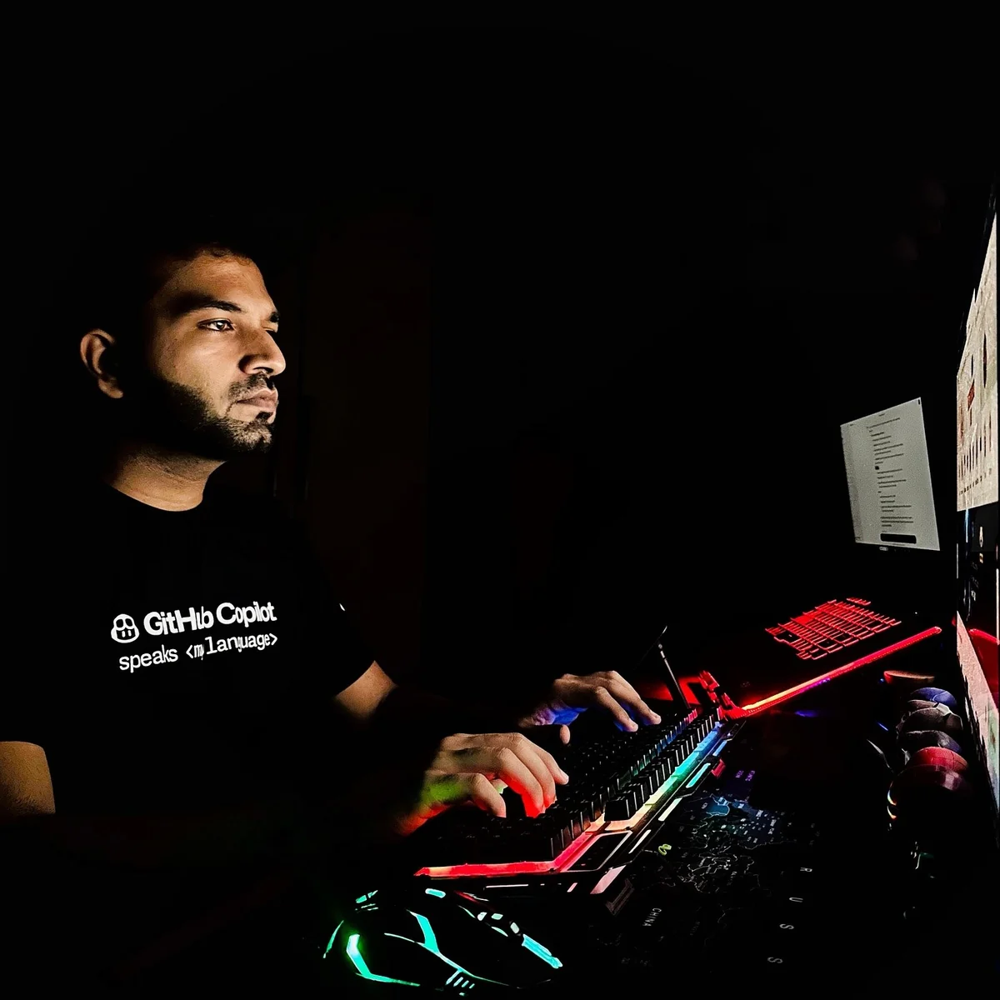
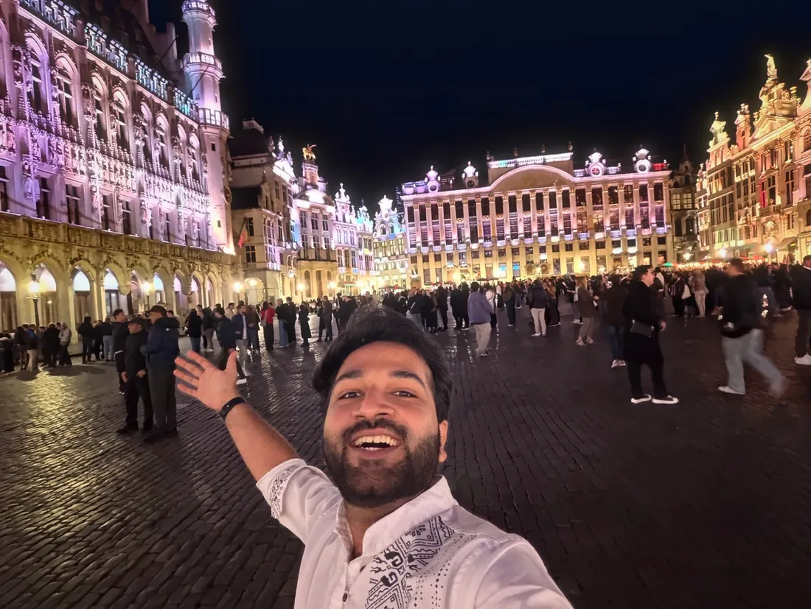
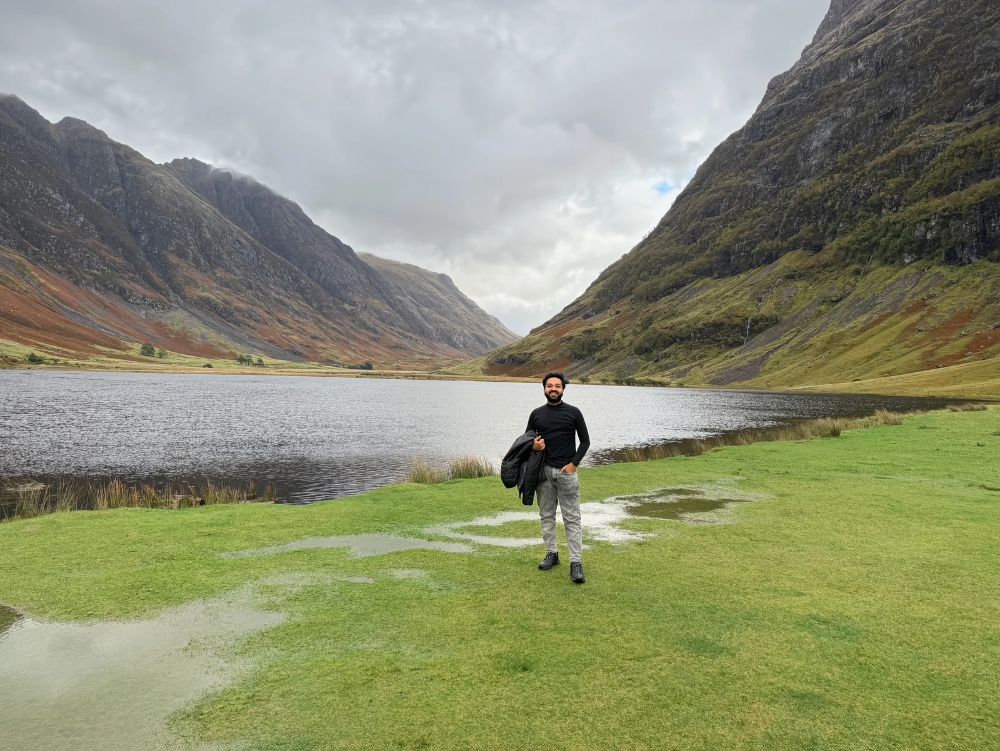
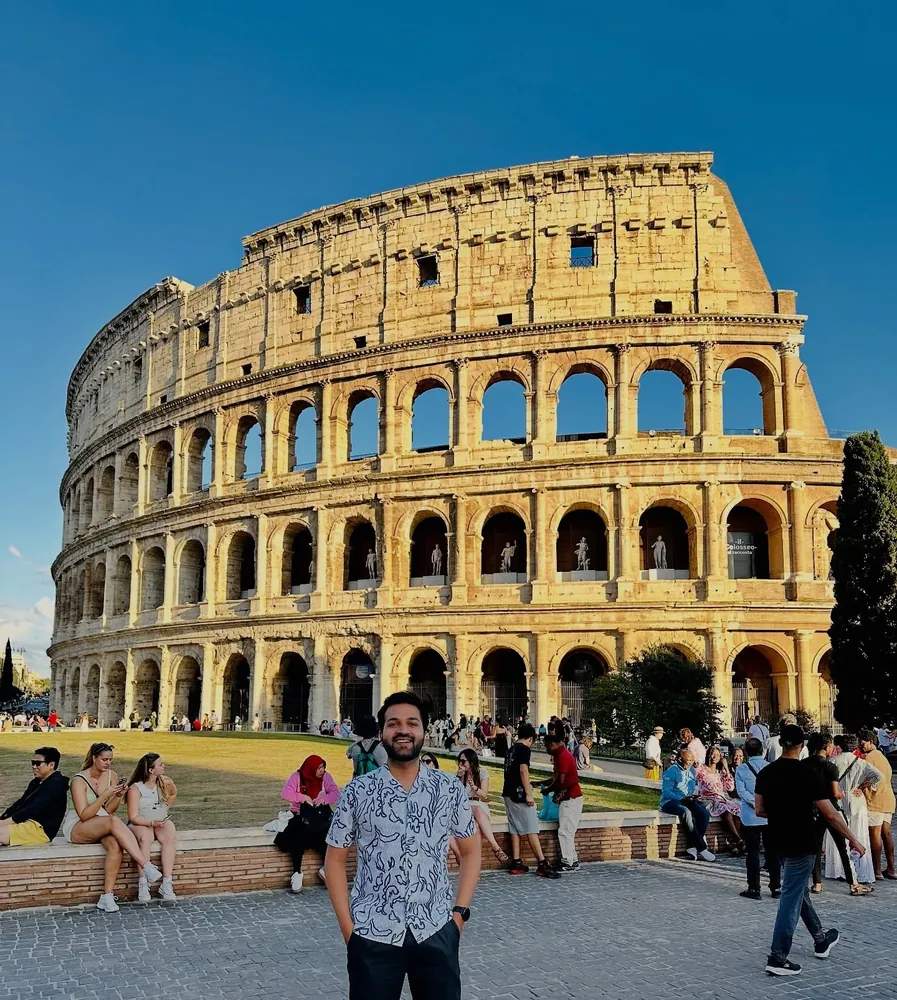
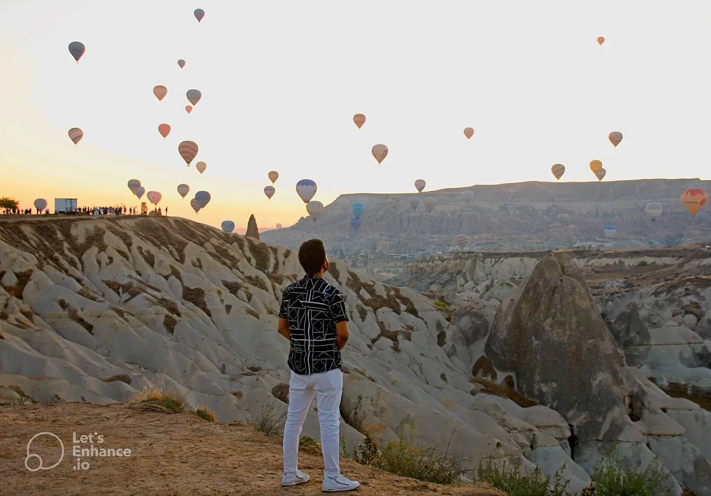
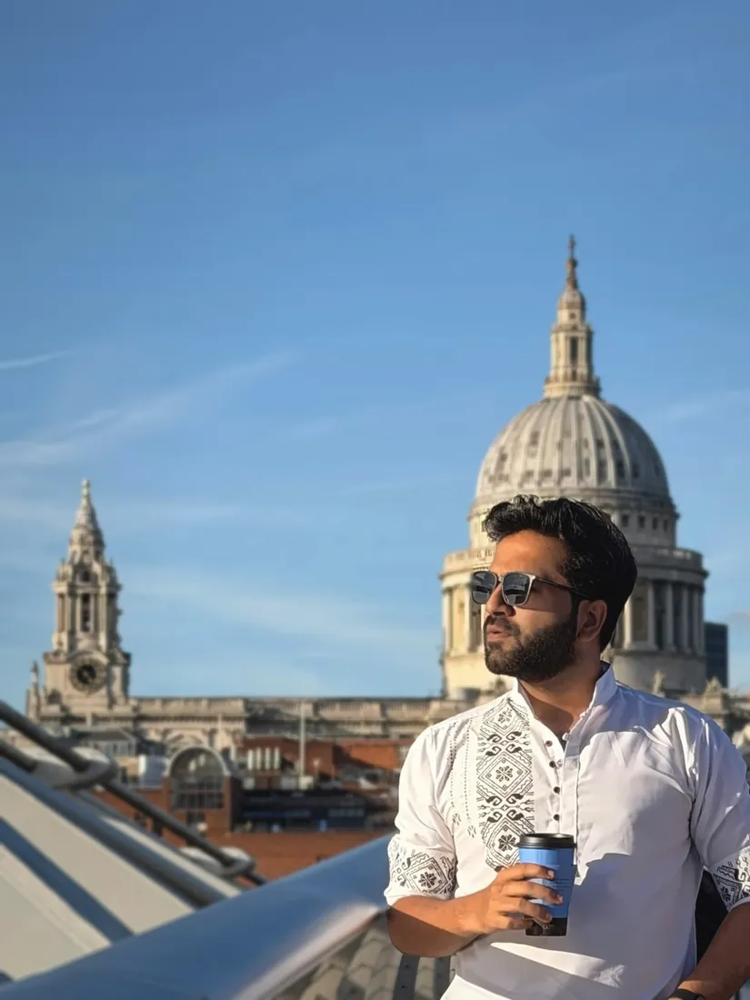
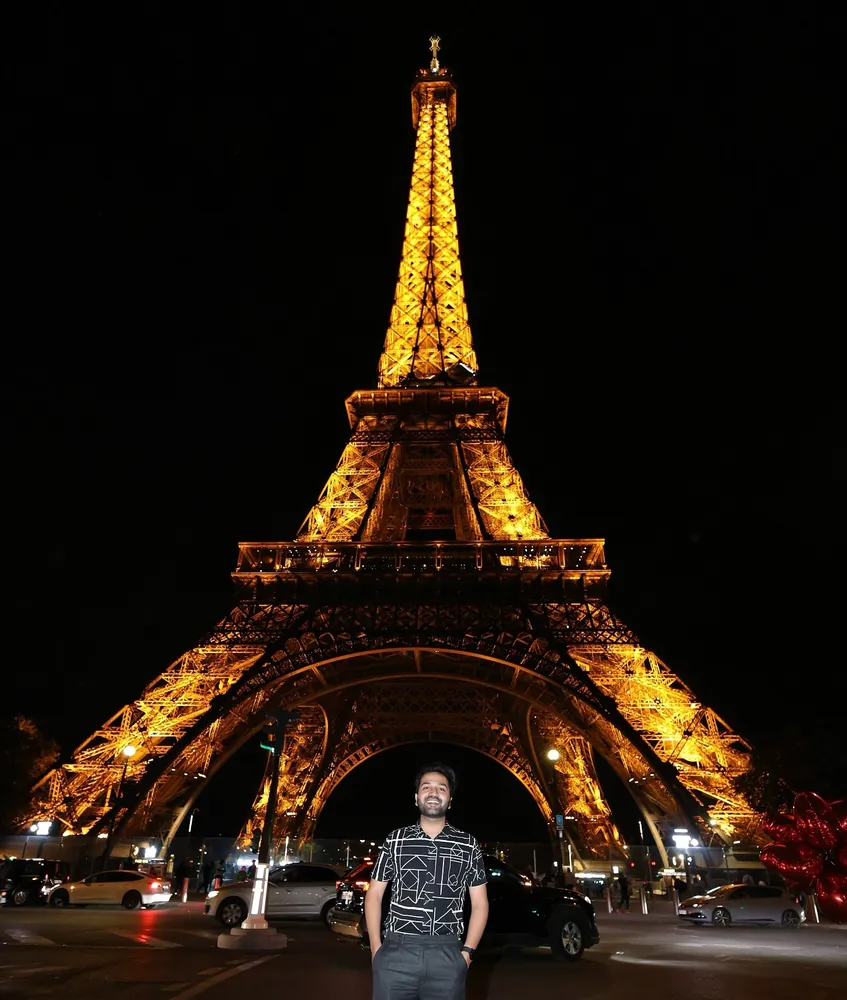
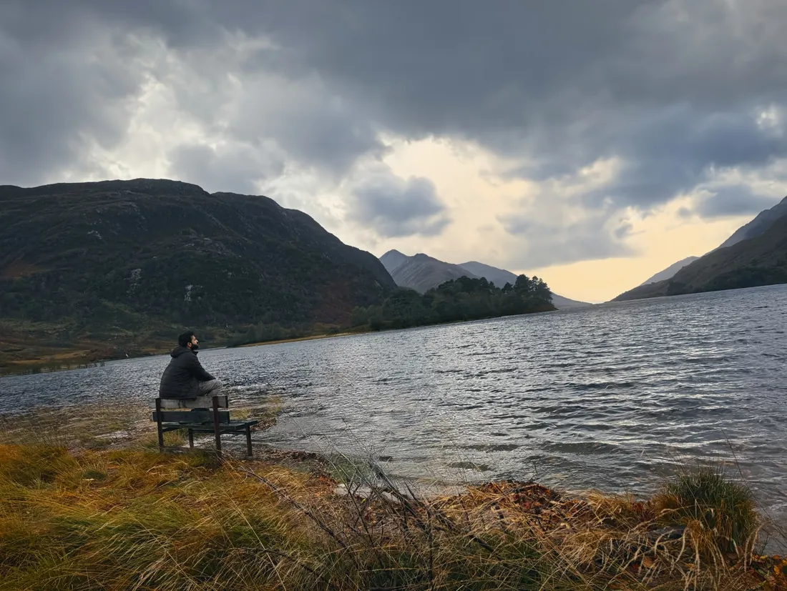
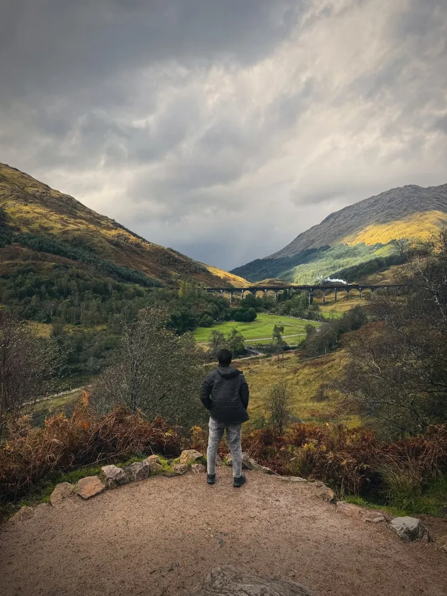

SDE-II · eGov Foundation · Open Healthcare Network
I test the software hospitals run on.
- 5+
- years in QA
- 11
- Indian states
- 210+
- Tele-ICU hospitals
PlaywrightCypressSeleniumPytestTypeScriptPythonGitHub Actions
20
Countries.
Mostly alone.
Keep scrolling →











Himalayan
and no fixed plan.